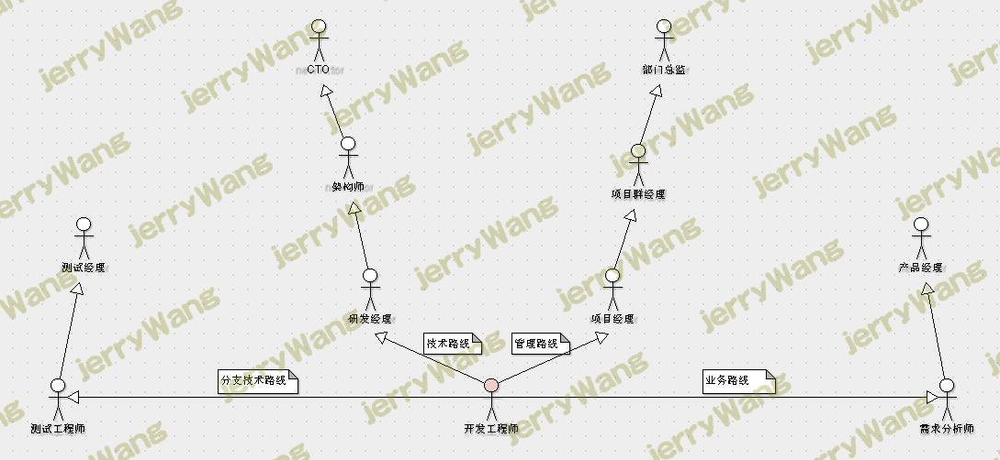

浅谈程序猿的职业规划，看你如何决定自己的未来吧
引言
这篇文章LZ很久以前就想写，只是LZ本人也一直在摸索当中，不过LZ摸索的是自己的道路。其实作为一个程序猿来说，大体上的路线已经摆在众人眼前，到底自己有什么样的想法，自己适合哪条路，还是只能自己去摸索，这一点请各位不要征求任何人的建议。LZ能做的，就是把各个路线的客观事实陈列出来，供大家选择。
条条大路通罗马，三百六十行，行行出屌丝。作为一个IT界有理想有抱负，高端大气上档次的屌丝，LZ还是对未来很有打算的。说起这个打算，大致就是两种，一种是生活上的规划，一种是职业上的规划。对于前者来说，无非就是生活在哪座城市，何时打算步进婚姻殿堂，何时打算成为父亲等等。而后者则相对简单，也相对困难，简单的是它只需要给自己规划出一条大道即可，困难的是，它不像生活规划，可以相对随性，而且有无数前人的经验供你参考，大部分时候，它只能靠你自己一步一步的摸索。
不过职业规划的大体框架基本都是固定的，只不过每个人走的路形色各异，而且不是有句广告词叫“不走寻常路”吗，现实当中难免会有人走别人没走过的路，走着走着，便成了一条路。不过话说回来了，也可能走着走着，便走到死胡同了。因此安全起见，我们大部分人还是适合大众路线的。
浅谈职业规划
首先LZ想给大部分的猿友，尤其是在校生普及一点知识。就是我们在选择工作的时候，抛开工资、环境等这些细节不谈，我们的大方向应该主要考虑职业和行业这两个方面。
职业则是指你干的什么，而行业则是指你在哪个领域。不准确但更简单的来说，职业规划就是决定你未来准备在哪个领域干什么。比如举一个例子，你现在在某家银行当程序员。此时，金融就是你的行业，程序员则是你的职业。
现在现存的行业千奇百怪，比如互联网、金融、传媒、农业等等，这些都是可选的行业。对于程序猿来讲，刚开始的职业规划可以不考虑行业的选择而只考虑职业，也就是说，只要是干程序员，到哪个行业的公司都差别不大，除非当前公司的行业你十分厌烦。不过当职业生涯走到一定阶段，则需要好好考虑下自己准备投身哪个行业了。
由于行业选择的个人因素比重比较大，因此LZ这里就不对此作出建议了，各位猿友可以根据自身的性格特点，特长爱好等，来选择自己准备奋斗一生的行业。LZ这里主要来谈的是职业规划中的职业。
职业路线一览
这里LZ简单的画了一个职业通道的路线，可能与有些公司的职位不符，毕竟公司不一样，规模和起名的习惯可能不一样，但是大体上是这么个路子。各位猿友看看就好，不需要拘泥于职位名称。

LZ考虑到各个公司的职位职责可能不尽相同，比如有的公司的项目经理，其实是集研发经理的任务于一身的，因此这里有必要对图中的各个角色的职责做一个简单的说明，以免对各位猿友造成误导。以下主要介绍三种角色，也是最容易引起误会的三个。
开发工程师：这个大家是最熟悉的，这个角色主要负责系统中某个模块或某个功能的设计与编码，有时候还会有数据库设计的工作等等。
研发经理：主要负责项目的技术选型，技术难题的攻克，技术人员的招聘，团队成员的技术培训与熏陶等一系列与技术相关的工作。
项目经理：主要负责项目进度的规划、跟进、落实、交付以及与客户的沟通等任务，是一个项目的监督者与管理者。
浅谈程序员的职业路线
在讨论下面的内容之前，LZ需要先声明一点，这一点从图中也能看出，本次讨论的职业发展，都是基于一个条件，那就是你是以做程序员为职业的起步的。因此本次主要讨论的是以程序员作为起点的职业发展之路，倘若你一开始就做的测试或者需求等，那就不在本次讨论之列了。另外一点就是上面所写的开发工程师或者说程序员是一个统称，很多时候还分为初中高级，这里我们就不做区分了，它对我们的职业规划的影响并不大。
在上面的图中可以看到，一共有四条路线，而左边和右边的测试与需求，上升的途径相对来讲会受限一些，不过这不能说明这两种路线就是差的。就大部分情况下而言，从程序员转向测试和需求的人员当中，一般女性居多，但是一个人职业的发展是非常个性化的，因此并不是说男生就不适合干测试和需求，就像不能说女生就不能干开发一样，这需要因人而异。
对于剩下的两条主路线，则大多数时候是我们的首选路线，但是这里的管理路线有些特别，需要以技术为背景，否则的话，往往前途有限。对于一个部门总监或者叫技术总监来说，他可以忘记了当初如何读取一个文件，如何实现上传下载功能等等这些技术细节，但是这些一线开发经历，一般是管理技术部门的前提。不过这个前提，对于程序猿来说，大部分时候是可以满足的。
浅谈技术路线的要求
技术路线应该是几乎所有程序猿梦寐以求的路线，当你问一个程序猿的目标是什么，几乎大多数人会说架构师或者CTO。这不仅仅是因为这是技术路线的巅峰，更是因为这两个称谓给人霸气侧漏、高深莫测的感觉。
LZ曾经见过公司的CTO，还有幸交谈过几句话，说来尴尬，说话的原因是因为当时LZ负责的系统出了问题。如果说CTO当时给LZ的第一印象是什么，LZ只能说，一看就是神一样的人物。最重要的是，LZ一见就有一种想要膜拜的感觉，对于LZ这种自以为是的技术家伙来说，产生这种感觉只有两种情况，一种是对方弱到极致，一种则是强到极致。不过现在想想，可能更多的是因为CTO是LZ的梦想的缘故吧。
想要走技术这条路，需要具备几个素质，如果你想让自己走这条路，那么请看看这几点你是否具备，虽然这并不权威，但若是你基本都不满足，那么LZ觉得，你走这条路的前途也确实堪忧了。
1、对技术的狂热，或者说是执着，亦或是兴趣，有一足矣。
2、良好的逻辑思维能力，如果你觉得数学、物理等理科从小都是自己的天敌，那么你懂的。
3、坚信技术是有出路的，哪怕你已经为此成为了骨灰级屌丝，你也要时不时给自己一巴掌，然后大喊，“Hello World！”
4、强壮的身体，尤其是坚挺的颈椎以及腰部。
5、一个始终认为你是高科技人才的媳妇，当她看到你回到家总是在看书或是对着电脑噼里啪啦的时候，她会用充满敬佩的目光看着你，而不是坐在你的大腿上大喊，“老公，陪我玩嘛！”
6、惊人的毅力与坚持，尽管技术并不代表你就要天天坐在电脑跟前，或是永远抱着一本爬满代码的书，但是难免需要牺牲一部分外面的花花世界，因此若是你属于坐不住闲不下来的人，那么LZ也只能说你懂的。
7、对于自己掌握的技术有一定的成就感，甚至是一定程度上的“自傲”。尽管做人要低调，但是当你看着别人买车买房，妻妾成群，而你除了一身技术，却唯有出租屋与卫生纸相伴的时候，这种“自傲”就是你坚持下去的动力。
以上七点随是LZ一家之言，但若是猿友们觉得这些大部分与你格格不入，那么LZ还是劝猿友们好好考虑一下自己的未来规划吧。
浅谈管理路线的要求
谈到管理，真是有人喜欢有人厌，LZ亲口问过很多程序猿一个同样的问题，但是他们的答案很多都是这样一句话，“我对管理不是很感兴趣。”
这里面的原因不一而论，但是相信有大部分人是有这样一种考虑，觉得自己作为一个技术人员，最终以管理为生，是一种堕落，亦或是害怕自己在承担了太多管理的重任之后，彻底丢掉了自己曾经赖以生存的技术。
这种心情是可以理解的，但是理解不代表认同。管理同样也是一门很深的学问，而且随着你工作经验的增加，不可避免的都需要管理一些人，区别只不过是人数多少的问题。而且不要忘了，你其实一直都在管理着你自己，管好自己其实同样是一种管理。
话说回来，管理也并不是你想做就一定能做的，有多少程序猿年过30，却依然奋斗在编码一线。这其中确实有那么一批人，是甘愿如此。但却有更多的人，是因为坐不上管理岗位的位子，才不得不如此。
管理这条路依然不好走，因此也同样需要一些基本的素质，否则可能一切也同样是枉然。因此LZ这里依然列举几点要求，同技术路线一样，倘若你与这些要求相差甚远，那么换一条路走下去，或许会更好。
1、宽广的胸怀，俗话说，胸怀天下，才可成为一国之君。胸中无天下，如何管理天下？可以说，你的胸怀能容纳多少人，能容纳什么人，就决定了你能管理多少人，能管理什么样的人。
2、敢于担当，有一定程度的奉献精神，倘若你是一个十分自私的人，那么LZ只想说，你懂得。
3、有一定的技术水准，这一点并不是普通管理者的硬性要求，但谁让你管的是一群高智商的程序猿呢。若是技术烂到极致，那么管理起来将会很难服众，而且对于项目进度的掌控也可能会有所误判。
4、良好的表达与沟通能力，这一点是必须的品质。否则可能你工作当中经常收到的不是上司的赞扬，而基本上全是客户的投诉。
5、做人方面没有短板。比如脾气暴躁到几乎跟公司的人吵架吵了一遍，或者己所不欲，非施于人，又或者眼高手低等等。这些短板，尽管不会导致你失业，但是大部分时候会严重阻碍你的发展。
6、有一定的伯乐能力，知人善用。
7、坚信下属的成功就是自己的成功，而不是自己的下岗。
同样的，以上七点随是LZ一家之言，但若是猿友们觉得这些同样是大部分与你格格不入，那么LZ还是劝猿友们好好考虑一下自己要不要管别人吧。
浅谈其他路线的选择
看到这里，估计有的猿友要暴走了，“擦，我竟然两条路都走不通”。倘若你与上面的十四条都格格不入，那么恭喜你，你一定是一个十分特别的人。不过天无绝猿之路，上帝收走你的性别，至少咱还可以去泰国不是。
不要忘了那个图上面还有两条路呢，那其实也是很好的路线。一个优秀的自动化测试可以给公司带来偌大的贡献，一个优秀的需求分析师也可以省去很多不必要的重复劳动。可以说，这两者也都不是浪得虚名。
测试是产品质量保障的最后一道关卡，因此需要足够的细致与严谨。倘若是自动化测试，则要求会更高一点。但是如果你是从程序猿转来的，那么工作起来会顺利很多。因为只要是自动的东西，就离不开程序。需求是产品路线的指向灯，是客户心理的蛔虫，因此需要能够挖掘客户的真实需求。而且对于需求这条路来说，LZ还要提醒猿友们一点，那就是需求这条路基本上是与行业挂钩的，因此如果你的行业尚未确定，那么需求可以稍后再转。
尽管看起来这两者的前途有限，但是或许走着走着，你会发现另外一片天空。由于LZ本人对这两者了解相对较少，因此LZ也不知道这片天到底是蓝色还是灰色，不过就算是灰色，你也可以努力把自己变成太阳，照亮整个天空。
说到底，路线没有好坏之分，只有适不适合这一说。当然了，这所有的路线之外，还有一条路，那就是创业。比如卖水果，卖烧饼，卖叉叉。
LZ本人无任何创业经验，因此也不好发表言论。不过LZ个人认为，创业需要一步一步脚踏实地，有多大能力揽多大活，如果你创业时的口号是，“我要干掉BAT”，那LZ还是想说，你懂得。
职业规划的开始
程序猿，是技术相关的职业生涯一个不错的开始，不论你以后是要做CTO还是总监等等，只要你还做着技术大家庭中的一员，那现在的技术沉淀，都将是你未来的基石。我们并不需要急于确定自己以后的路线，因为你的能力或者是认识或许还不足以选择。
在你做程序猿的日子里，你需要做的，就是干好手下的工作以及不断的学习。这之中还有一个更重要的任务，那就是认识自己。
当你开始认识自己的时候，就是职业规划的开始。对于任何一个人来说，只有不断的认清自己，你才知道你的路在何方，你才知道你是为何而生。天生我材必有用是没错，但是怕就怕你一辈子都没发现你有啥用。
 微信
微信 支付宝
支付宝